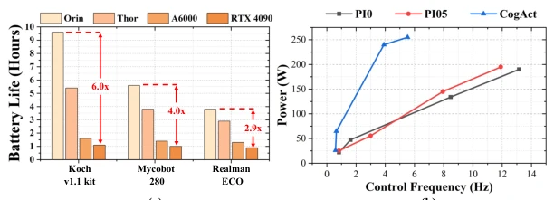
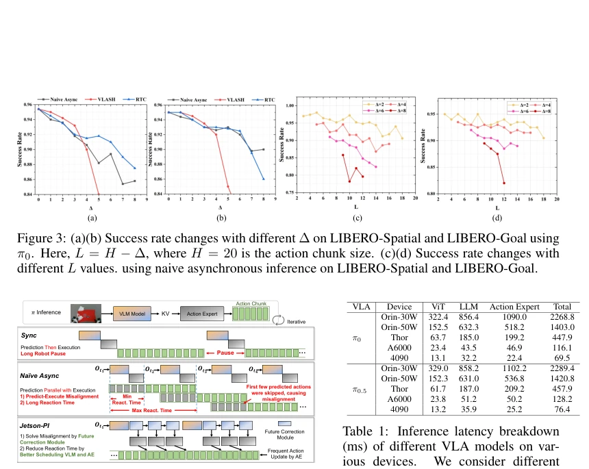
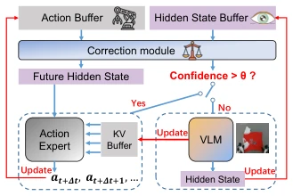
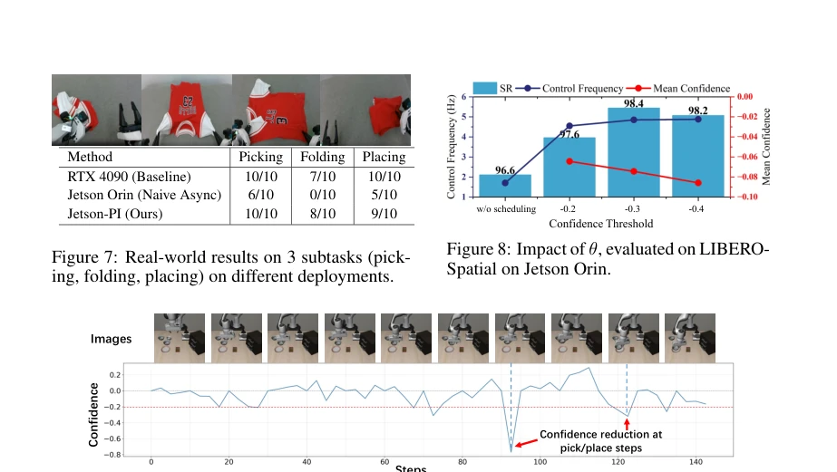

EN
← 返回 ← Back
Jetson-PI: Towards Onboard Real-Time Robot Control via Foresight-Aligned Asynchronous Inference
Zebin Yang, Qi Wang, Yunhe Wang, Xiurui Guo, Bo Yu, Shaoshan Liuabs pdf
论文点评 Review Jetson-PI 试图在边缘设备上驯服 VLA 模型这头巨兽，但显然“既要马儿跑，又要马儿不吃草”是个伪命题。作者很聪明地用“异步推理 + 未来修正”来掩盖延迟，但这本质上是在用算力换时间。虽然控制频率提升了 8 倍多，但 40M 的修正模块毕竟是个小补丁，面对复杂动态环境能否泛化存疑。系统层面的优化（如 CUDA Graph）确实实用，但把 VLA 塞进 Jetson 就像把大象塞进冰箱，虽然门能关上，但大象还是大象。不过，在电池寿命和实时性之间找到平衡点，这工作确实比纯刷榜更有价值，只是对模型架构本身的改进有限，更多是工程上的妥协。
—
研究动机 Motivation VLA 模型在具身智能中表现优异，但部署在 Jetson 等低功耗设备上面临巨大挑战。高计算复杂度导致推理延迟大，控制频率低 [1, 3]。现有异步推理方法（如 SmolVLA [27]）虽能并行执行与推理，但引发“感知 - 执行错位”，即环境在推理期间已变化。VLASH [9] 预测机器人未来状态，但无法反映环境变化，延迟增加时效果下降。此外，高功耗设备（如 RTX 4090）虽快但续航短，限制机器人活动范围 [1]。图 1 显示 RTX 4090 续航仅为 Jetson 的 1/6。因此，如何在边缘端实现低延迟且对齐的 VLA 部署至关重要。
—

Figure 1: (a) Battery life of three robots equipped with four different computing devices. We use a 500 Wh WILLQ AGV lithium battery pack, and robot’s mechanical power consumption is included. (b) Power consumption and control frequency of different VLA inference on four computing de- vices: Jetson Orin, Jetson Thor, RTX A6000, and RTX 4090. 方法 Method Jetson-PI 提出前瞻对齐异步修正框架。核心是训练轻量级未来修正模块，基于已执行动作预测未来 VLM 隐藏状态，使 Action Expert 能直接基于未来状态生成动作，解决错位问题。该模块仅 40M 参数，采用两阶段训练：先用真值训练压缩器，再训练修正模块预测未来状态并输出置信度。调度优化方面，引入置信度机制：若修正模块预测置信度高，则跳过 VLM 调用，仅用 Action Expert 更新动作，降低反应时间。系统层面基于 llama.cpp 构建，利用确定性 Token 长度复用 CUDA Graph，GPU 驻留中间缓冲避免 CPU-GPU 通信，并展开 Flow Matching 计算图减少调用开销。整体流程为：当前观测 + 动作 -> 修正模块 -> 未来状态 -> Action Expert -> 动作执行。此设计避免了并行推理导致的带宽竞争，特别适合边缘设备。
—

Figure 4: Overview of Jetson-PI. 
Figure 6: Scheduling Optimization. 实验 Experiments 在 LIBERO 基准测试中使用 pi0.5 模型，对比 Sync、RTC、VLASH 及 naive PyTorch。仿真结果显示，Jetson-PI 平均成功率比 VLASH 高 14.8%，且随延迟增加性能更稳定，在延迟为 9 时优势显著。在 Jetson Orin 上，控制频率提升 8.66 倍（vs PyTorch）和 5.41 倍（vs vla.cpp）。真实机器人实验（PrimeBot X2-W）完成衣物折叠任务，成功率接近 RTX 4090 部署。置信度消融实验表明，阈值过低会增加误差，过高则降低频率，自适应调度有效平衡了两者。图 9 展示了置信度随任务步骤的动态变化，验证了调度策略的有效性。此外，系统优化带来的延迟降低在表 4 中有详细拆解，证明了各模块的贡献。
—

Figure 9: An example of confidence evolution. The confidence threshold is -0.2, and the instruction is “pick up the black bowl between the plate and the ramekin and place it on the plate”.